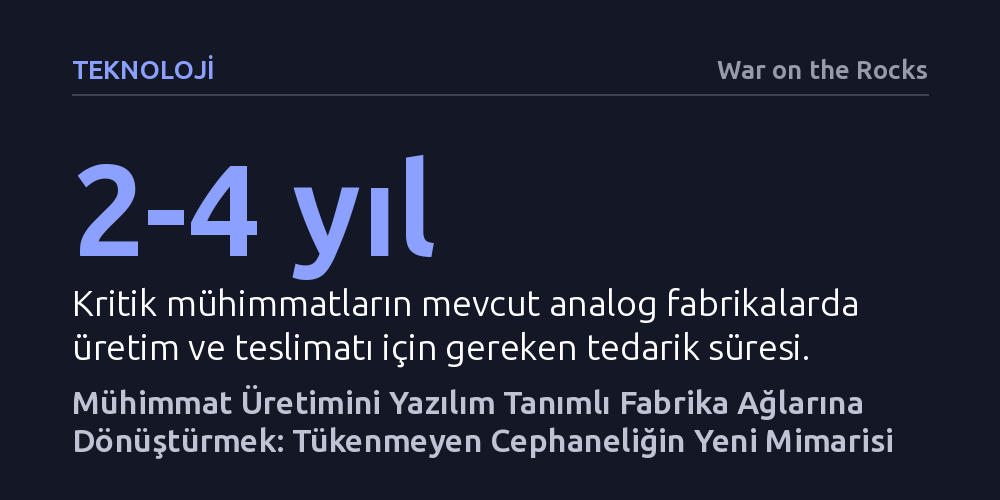

TEKNOLOJI · War on the Rocks · 2026-10-14
Klasik savunma sanayiinin uzun tedarik sürelerine karşı ABD, mühimmat üretimini yazılım tanımlı ve katmanlı üretim yapan dağıtık fabrika ağlarına devretmelidir. Tasarımı üretim tesisinden ayıran bu dijital mimari, savaş sırasında silahların hızla güncellenmesini ve cephaneliğin kesintisiz yenilenmesini sağlar.
Geleceğin savaşlarında caydırıcılığın depodaki mühimmat miktarına değil, fabrikalar vurulsa bile cephaneliği yazılım güncellemesi hızında yeniden üretebilen esnek üretim altyapısına bağlı olduğunu gösteriyor.

Ukrayna ve Orta Doğu'daki son çatışmalar, modern savaşların mühimmatı inanılmaz bir hızla tükettiğini acı bir biçimde ortaya koydu. Buna karşın ABD savunma sanayii, barış döneminin asgari sürdürülebilir üretim kotalarına göre tasarlanmış analog fabrikalara sıkışmış durumda. Dev ana yükleniciler, her bir parçası katı bürokratik onaylara ve özel tedarik zincirlerine bağlı sistemler üretiyor; siparişler ve bütçeler artırılsa dahi kritik bir füzenin üretim hattından çıkması iki ila dört yıl sürüyor.
Daha da tehlikelisi, bu üretim altyapısının merkezi yapısıdır. Az sayıda dev mühimmat fabrikası ve alternatifi olmayan tekil tedarikçiler, hassas vuruş kabiliyetine sahip bir düşman için açık ve öncelikli hedefler oluşturmaktadır. Savaşın ilk gününde depolarındaki mühimmatı tüketen bir ordunun, yıkılan tek bir fabrikanın yerine yenisini kurması yıllar alırken; savaşı sürdürebilmek stoktaki füze sayısından ziyade cephaneliği yenileme hızına bağlı hale gelmiştir.
Yazar, mühimmat darboğazını aşmak için çip endüstrisindeki tasarım ve dökümhane ayrımına benzer yeni bir üretim mimarisi öneriyor. Yarı iletken sektöründe nasıl ki teknoloji şirketleri çipi tasarlayıp üretim kurallarını içeren dijital bir süreç tasarım kitiyle (PDK) bağımsız dökümhanelere gönderiyorsa, mekanik mühimmat parçaları için de aynısı yapılmalıdır. Bu modelde parça tasarımı, fabrikanın fiziksel tezgahlarından ve belirli bir üretim bandından tamamen koparılmaktadır.
Böyle bir yapıda fabrikalar tek bir füze modeline göre sabit takımlarla donatılmaz; tasarımdan bağımsız (design-agnostic) çalışan yazılım tanımlı tezgahlar kullanılır. Aynı katmanlı üretim ve robotik montaj hattı, sabah bir seyir füzesinin gövdesini üretirken öğleden sonra bir kamikaze dronun kanadını ya da roket motoru kovanını imal edebilir. Böylece bir tesis vurulsa dahi, dijital üretim dosyası ağdaki başka bir kalifiye tesise saniyeler içinde yönlendirilerek üretim kesintisiz sürdürülebilir.
Dijital ve katmanlı üretim teknolojileri, sadece tedarik güvenliği değil, aynı zamanda muazzam bir mühendislik verimliliği sunmaktadır. Geleneksel imalatta yüzlerce farklı cıvata, perçin ve saç levhadan oluşan karmaşık yapılar, gelişmiş üç boyutlu yazıcılarla tek bir bütünleşik parça olarak basılabilmektedir. Nitekim General Atomics, küçük bir insansız hava aracı gövdesinde parça sayısını yüzde 95 oranında azaltmayı ve aletsiz robotik montajı yirmi dakikanın altına indirmeyi başarmıştır. Benzer şekilde GE Aerospace, Catalyst turboprop motorunda 855 parçayı sadece 12 katmanlı bileşene indirgemiştir.
Bu dönüşüm, lojistik zincirini yüzlerce ara tedarikçiden kurtarıp yalnızca temel hammaddeye ve üç kritik yüksek değerli bileşene indirgemektedir: patlayıcı kimyasallar, arayıcı başlıklar ve mikroelektronik. Gövde, yakıt tankları, kontrol yüzeyleri ve motor kovanları gibi hacimli mekanik yapılar dijital ağ üzerinden ihtiyaca göre anında basıldığı için, elde atıl metal stoku birikmez ve tedarik zincirindeki tıkanmalar en aza iner.
Bu dağıtık fabrika ağının hayata geçebilmesi, devletin belirli bir şirketi kayırması yerine açık ve ortak standartların sahibi olmasına bağlıdır. Yazar bunun için beş somut reform alanı sıralıyor: İlk olarak, parça bazlı hantal sertifikasyon terk edilmeli; makine ve süreç bir kez onaylandıktan sonra sertifika dijital tasarım dosyasıyla birlikte geçerliliğini korumalıdır. İkinci olarak, ordunun tüm kuvvet komutanlıklarının parça ve mühimmat katalogları tek bir dijital platformda birleştirilmelidir.
Üçüncü adım, patlayıcılar ve arayıcı başlıklar gibi kritik bileşen stratejisinin birleştirilmesidir; gövde üretimi hızlanırken kimyasal ve elektronik kısıtlar tek bir ulusal koordinasyonla çözülmelidir. Dördüncü olarak, savunma tedarik ihalelerinde artık yalnızca birim maliyete değil, fabrikanın ani talep artışına uyum sağlama ve dönüştürülebilirlik kapasitesine yüksek puan verilmelidir. Son olarak müttefik ülkeler, ortak sertifikasyon ve veri paylaşım protokolleriyle bu ağın doğrudan birer üretim düğümü haline getirilmelidir.
Ağ merkezli dijital üretime yönelik en belirgin itiraz, merkezi dijital veri hattının siber saldırılara ve sabotajlara açık hale gelebileceği endişesidir. Ancak fiziksel bir fabrikanın vurulduğunda yeniden inşası yıllar sürerken, kriptografik olarak imzalanmış bir dijital veri paketi dakikalar içinde güvenli sunucularda yedeklenebilir ve tüm ağ genelinde yamanabilir. Burada asıl mesele, dijital ipliğin tıpkı stratejik bir silah sistemi gibi sıkı biçimde savunulmasıdır.
Son tahlilde modern savaşlarda caydırıcılık, barış döneminde depolanan cephanenin büyüklüğüyle değil, çatışmanın yüzüncü gününde cephaneliğin ne kadar hızlı yenilenebildiğiyle ölçülecektir. Gerçek caydırıcılık düşmanın ilk saldırısını savuşturmaktan ziyade, savaşın onuncu yaylım ateşinde dahi tükenmeyen ve muharebe sahasından gelen anlık verilerle kendini sürekli güncelleyen bir endüstriyel üretim refleksine sahip olmaktan geçmektedir.